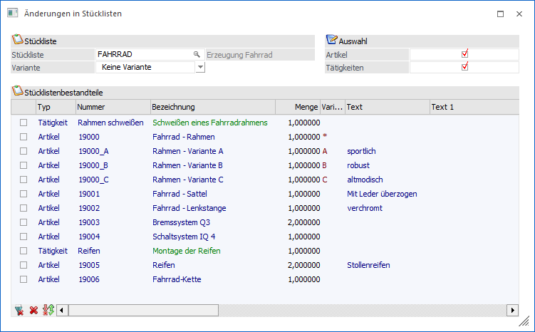
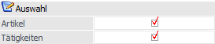
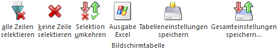
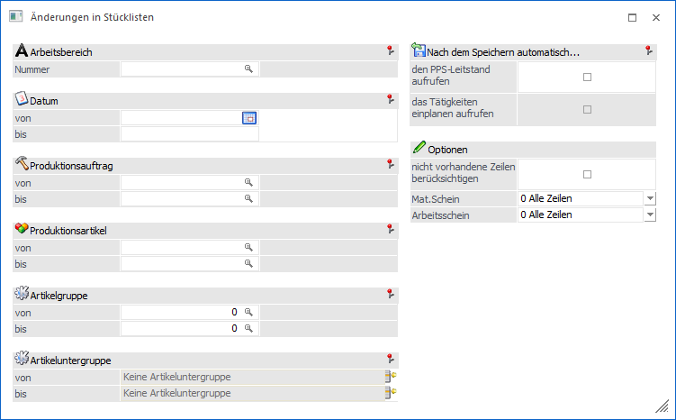
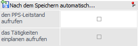
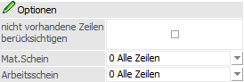
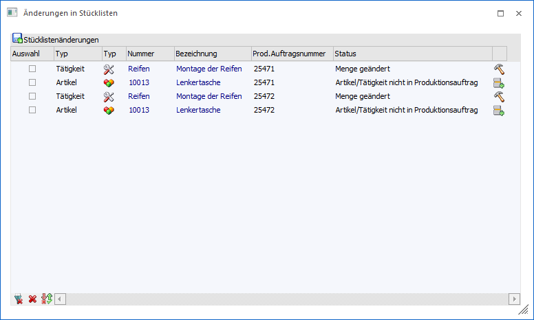
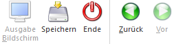

Das Fenster "Änderungen in Stücklisten" kann unter dem Menüpunkt
1 WinLine PPS
1 Auswertungen
1 Änderungen in Stücklisten
geöffnet werden. Mit Hilfe dieser Funktion können Änderungen bei Artikeln bzw. Tätigkeiten im Stücklistenstamm mit den Stücklisten von bestehenden Produktionsaufträgen abgeglichen werden. Das Fenster wird in Form eines Assistenten dargestellt, wobei mit Hilfe der Button "Vor" und "Zurück" zwischen den einzelnen Schritten gewechselt werden kann.
1. Schritt - Stückliste und Änderungselemente wählen

Im ersten Schritt des Assistenten wählt man die Stückliste aus. Nach Auswahl der Stückliste wird die Tabelle mit allen Artikeln dieser Stückliste gefüllt. Anschließend kann auch eine Variante gewählt werden, wodurch die Anzeige in der Tabelle entsprechend eingegrenzt wird.
Ø Menge
Das Mengen-Feld kann für jeden angezeigten Artikel bzw. Tätigkeit in der Tabelle editiert werden, somit kann die Vorgabe aus dem Stücklistenstamm manuell für den Abgleich übersteuert werden.
Auswahl

Ø Artikel
Bei Aktivierung von dieser Checkbox werden alle Artikel in der Tabelle angezeigt, die in der selektierten Stückliste enthalten sind. Mit der Selektions-Checkbox in der Tabelle kann dann pro Artikel gewählt werden, ob der jeweilige Artikel für den Abgleich berücksichtigt werden soll.
Ø Tätigkeiten
Bei Aktivierung von dieser Checkbox werden alle Tätigkeiten in der Tabelle angezeigt, die in der selektierten Stückliste enthalten sind. Tätigkeiten in der Tabelle sind mit grüner Schrift gekennzeichnet. Mit der Selektions-Checkbox in der Tabelle kann dann pro Tätigkeit gewählt werden, ob der jeweilige Artikel für den Abgleich berücksichtigt werden soll.
Tabellenbuttons "Stücklistenbestandteile"

Ø alle Zeilen selektieren
Beim Drücken dieses Buttons werden alle Zeilen der Tabelle selektiert.
Ø keine Zeile selektieren
Mit Hilfe dieses Buttons werden alle Auswahlen entfernt.
Ø Selektion umkehren
Durch Anklicken des Buttons "Selektion umkehren" wird die Auswahl bei allen Zeilen in das Gegenteil gekehrt.
Ø Ausgabe Excel
Durch Anwahl des Buttons "Ausgabe Excel" wird der Inhalt der Tabelle an Microsoft Excel übergeben.
Ø Tabelleneinstellungen speichern
Die Spalten einer Tabelle können grundsätzlich an beliebige Positionen verschoben, bzw. in der Breite entsprechend angepasst werden. Durch Anwahl des Buttons "Tabelleneinstellungen speichern" werden die Einstellungen benutzerspezifisch gespeichert und bei dem nächsten Aufruf des Programmpunktes wieder vorgeschlagen.
Ø Gesamteinstellungen speichern
Im Gegensatz zu "Tabelleneinstellungen speichern" können mit "Gesamteinstellungen speichern" mehrere Tabellenaufbauten gespeichert und nach Wunsch geladen werden. Zusätzlich werden Sonderfunktionen der Tabelle (z.B. "Spalte gruppieren") ebenfalls bei der Speicherung bedacht.
2. Schritt - Ausgabe / Einschränkungen

In diesem Schritt können diejenige Produktionsaufträge ausgewählt werden, die für den Abgleich herangezogen werden. Eingeschränkt (Von-Bis) kann nach Produktionsauftrag, Produktionsartikel, Artikelgruppe, Artikeluntergruppe, und Produktionsdatum.
Ø Arbeitsbereich
Auswahl des Arbeitsbereiches. Mit Hilfe des Arbeitsbereiches können gewisse Einschränkungen wie z.B. der Produktionsartikel bereits vorbelegt werden. Die Anlage des Arbeitsbereichs erfolgt in den Stammdaten.
Ø Datum
Eingabe des Datums an dem die zu selektierenden Produktionsaufträge eingelastet sind.
Ø Produktionsauftrag von / bis
Eingabe aus welchem Projektbereich gewählt werden soll. Wird eine Projektnummer eingegeben, dann wird neben dem Eingabefeld der Artikel angezeigt, der produziert werden soll. Durch einen Klick auf den Artikel wird ein "Drill-Down" durchgeführt. Über die rechte Maustaste kann eingestellt werden, welche Aktion dabei ausgeführt werden soll, wobei die letzte Aktion gemerkt wird. D.h. wenn das nächste Mal mit der linken Maustaste auf den Link geklickt wird, wird die letzte Aktion wieder ausgeführt. Dabei stehen folgende Optionen zur Verfügung:
ü Produktionsdatum
Das ist bei
einer Startproduktion jedes Datum an dem die Produktion beginnen soll bzw. bei
einer Zielproduktion jedes Datum bei dem eine Produktion enden soll.
ü Produktionsstartdatum
Auswahl
jedes Datums, an dem die erste Tätigkeit eingeplant bzw. an dem die Produktion
tatsächlich beginnt.
ü Produktionsenddatum
Auswahl
jedes Datums, an dem die letzte Tätigkeit eingeplant wurde bzw. an dem die
Produktion endet.
Hinweis
Mit der rechten Maustaste im Feld kann im Kontextmenü-Eintrag "aktuelle Produktionsaufträge" einer der 20 zuletzt verwendeten Produktionsauftragsnummern ausgewählt werden. Die selektierte Produktionsauftragsnummer wird automatisch ins Feld "Produktionsauftragsnummer" eingefügt.
Ø Produktionsartikel
Welche Produktionsartikel sollen bearbeitet werden. Wird eine Einschränkung vorgenommen, dann wird neben dem Eingabefeld die Artikelbezeichnung angezeigt. Durch einen Klick auf die Bezeichnung kann eine Drill-Down-Funktion ausgelöst werden. Welche Aktion dabei ausgelöst wird, kann über die rechte Maustaste festgelegt werden (die letzte Einstellung wird gespeichert), wobei folgende Optionen zur Verfügung stehen:
ü Aufruf Info
Es wird der Artikel
in der Artikelinfo im Programm WinLine INFO geöffnet.
ü Artikelstamm
Der Artikel wird
in der WinLine FAKT im Artikelstamm geöffnet.
ü Statistik
Es wird die
Artikelstatistik in der WinLine FAKT geöffnet.
Wird im Feld Produktionsartikel von - bis z.B. nur eine Artikelnummer eingegeben und dieser Artikel hat auch noch Ausprägungen, so werden alle Ausprägungen automatisch mit berücksichtigt. Nur wenn während des Anklickens des "OK-Buttons" die STRG-Taste gedrückt wird, wird nur der Hauptartikel alleine berücksichtigt.
Ø Artikelgruppe
Welche Artikelgruppen sollen bearbeitet werden (betrifft den Produktionsartikel). Wenn auf Artikelgruppen eingeschränkt wird, dann wird neben dem Eingabefeld die Artikelgruppenbezeichnung angezeigt. Durch einen Klick auf die Bezeichnung wird der Artikelgruppenstamm geöffnet.
Ø Artikeluntergruppen
Welche Artikeluntergruppen sollen bearbeitet werden (betrifft den Produktionsartikel).
Nach dem Speichern automatisch…

Ø den PPS Leitstand aufrufen
Bei deaktivierter Checkbox wird das Stücklisten-Abgleich ausgeführt, ohne den Leitstand im Anschluss zu öffnen. Änderungen bei Tätigkeiten werden in die selektierten Produktionsaufträge übernommen (evtl. vorhandene SOLL-Zeiten werden dabei storniert, d.h. die Tätigkeiten werden "ausgeplant"). Später kann im Fenster "Leitstand-Selektion" die Checkbox-Option "nur Prod.aufträge mit nicht eingeplanten Tätigkeiten" verwendet werden, um die Selektion nach Produktionsaufträgen mit nicht eingeplanten Tätigkeiten einzuschränken.
Wenn die Checkbox aktiviert ist, wird nach dem Stücklisten-Abgleich das Fenster "Leitstand-Selektionen" automatisch geöffnet. Die Selektions-Option im Leitstand-Selektion "nur Prod.aufträge mit nicht eingeplanten Tätigkeiten" ist dabei automatisch aktiviert, Somit können die abgeglichen Produktionsaufträge gleich im Leitstand weiterbearbeitet werden, z.B. um die Tätigkeiten erneut einzuplanen.
Ø Tätigkeiten einplanen aufrufen
Nach dem Stücklisten-Abgleich wird automatisch das Fenster "Leitstand/Tätigkeiten einplanen" geöffnet und die Tabelle mit den Tätigkeiten aus allen betroffenen Produktionsaufträgen gefüllt.
Optionen

Ø nicht vorhandene Zeilen berücksichtigen
Wenn diese Checkbox aktiviert ist, werden Artikel bzw. Tätigkeiten für den Abgleich berücksichtigt, die nicht mehr im Stücklistenstamm enthalten sind. Somit können Artikel bzw. Tätigkeiten in Produktionsaufträgen entfernt werden, die nicht mehr im Stücklistenstamm vorhanden sind. Wenn die Checkbox nicht aktiviert ist, wird das nicht mehr Vorhandsein von Artikeln bzw. Tätigkeiten nicht abgeglichen.
Ø Mat.Schein
Mit den folgenden Optionen können Projekte nach dem Druckstatus des Materialentnahmescheines selektiert werden:
ü 0 - Alle
Zeilen
Produktionsaufträge werden unabhängig vom Druckstatus des
Materialentnahmescheins bei der Umstellung berücksichtigt.
ü 1 - muss gedruckt sein
Nur jene
Produktionsaufträge werden für die Umstellung berücksichtigt, für die ein
Materialentnahmeschein gedruckt wurde.
ü 2 - darf nicht gedruckt
sein
Nur jene Produktionsaufträge werden für die Umstellung berücksichtigt,
für die noch kein Materialentnahmeschein gedruckt wurde.
Ø Arbeitsschein
Mit den folgenden Optionen können Projekte nach dem Druckstatus des Arbeitsscheines selektiert werden:
ü 0 - Alle
Zeilen
Produktionsaufträge werden unabhängig vom Druckstatus des
Arbeitsscheins bei der Umstellung berücksichtigt.
ü 1 - muss gedruckt sein
Nur jene
Produktionsaufträge werden für die Umstellung berücksichtigt, für die ein
Arbeitsschein gedruckt wurde.
ü 2 - darf nicht gedruckt
sein
Nur jene Produktionsaufträge werden für die Umstellung berücksichtigt,
für die noch kein Arbeitsschein gedruckt wurde.
Wenn dieses Fenster geschlossen wird (Taste "ESC" oder Button "ENDE"), werden die Produktionsaufträge im Leitstand wieder geladen.
Mit den zwei Button-Optionen "Ausgabe Bildschirm" und "Ausgabe Drucker" kann eine Vorschauliste angedruckt werden, "Änderungen in Stücklisten". In dieser Liste werden die Änderungsstati von den abzugleichenden Artikeln bzw. Tätigkeiten aufgelistet.
3. Schritt - Übersicht / Speichern

In diesem 3. Schritt des Assistenten werden die Artikel bzw. Tätigkeiten in der Tabelle aufgelistet, die beim Abgleich berücksichtigt werden. Um den jeweiligen Artikel bzw. der jeweiligen Tätigkeit beim Abgleich mitspielen zu lassen, muss die "Auswahl"-Checkbox vorm Artikel bzw. vor der Tätigkeit in der Tabelle aktiviert werden.
Wie in der Legende in der Auswertung ersichtlich können die folgenden Änderungsstati beim Stücklisten-Abgleich vorkommen:
ü
1 - Zeile unverändert
Es sind keine Unterscheide zwischen der Tätigkeit in
der Stückliste und im Produktionsauftrag.
ü
2 - Menge geändert
Die Menge in der Stückliste ist nicht gleich der Menge im
Produktionsauftrag.
ü
3 - Nummer geändert
Die Tätigkeitsnummer wurde in einer bestehenden Zeile in
der Stückliste editiert (überschrieben), d.h. sie muss im Produktionsauftrag
ausgetauscht werden.
ü
4 - Nicht in Stückliste
Die Tätigkeit ist im Produktionsauftrag aber nicht im
Stücklistenstamm.
ü
5 - Nicht in Produktionsauftrag
Die Tätigkeit ist im Stücklistenstamm aber
nicht im Produktionsauftrag.
ü
8 - Tätigkeitenreihenfolge geändert
Die Tätigkeitreihenfolge im
Stücklistenstamm ist nicht der Reihenfolge im Produktionsauftrag.
ü
9 - Durchgehende Tätigkeit geändert
Die Aktivierungsstatus der Checkbox
"durchgehende Tätigkeit" in der Stückliste ist nicht gleich wie im
Produktionsauftrag.
Tabellenbuttons "Stücklistenänderungen"
Ø alle Zeilen selektieren
Beim Drücken dieses Buttons werden alle Zeilen der Tabelle selektiert.
Ø keine Zeile selektieren
Mit Hilfe dieses Buttons werden alle Auswahlen entfernt.
Ø Selektion umkehren
Durch Anklicken des Buttons "Selektion umkehren" wird die Option "Auswahl" bei allen Zeilen in das Gegenteil gekehrt.
Ø Ausgabe Excel
Durch Anwahl des Buttons "Ausgabe Excel" wird der Inhalt der Tabelle an Microsoft Excel übergeben.
Ø Tabelleneinstellungen speichern
Die Spalten einer Tabelle können grundsätzlich an beliebige Positionen verschoben, bzw. in der Breite entsprechend angepasst werden. Durch Anwahl des Buttons "Tabelleneinstellungen speichern" werden die Einstellungen benutzerspezifisch gespeichert und bei dem nächsten Aufruf des Programmpunktes wieder vorgeschlagen.
Ø Gesamteinstellungen speichern
Im Gegensatz zu "Tabelleneinstellungen speichern" können mit "Gesamteinstellungen speichern" mehrere Tabellenaufbauten gespeichert und nach Wunsch geladen werden. Zusätzlich werden Sonderfunktionen der Tabelle (z.B. "Spalte gruppieren") ebenfalls bei der Speicherung bedacht.
Buttons

Ø Ausgabe Bildschirm (nur in "2. Schritt - Ausgabe / Einschränkungen")
Mit Hilfe des Buttons "Ausgabe Bildschirm" oder der Taste F5 wird eine Übersicht über die zu ändernden Produktionsaufträge am Bildschirm ausgegeben.
Ø Ausgabe Drucker (nur in "2. Schritt - Ausgabe / Einschränkungen")
Durch Anwahl des Buttons "Ausgabe Drucker" wird eine Übersicht über die zu ändernden Produktionsaufträge am Drucker ausgegeben.
Ø Speichern (nur in "3. Schritt - Übersicht / Speichern")
Durch Anklicken des Buttons "Speichern" wird der Stücklisten-Abgleich ausgeführt.
Ø Ende
Durch Anwahl des Buttons "Ende" bzw. der Taste ESC wird das Fenster geschlossen.
Ø Zurück / Vor
Mit Hilfe der Buttons "Vor" und "Zurück" kann zwischen den unterschiedlichen Schritten der Stücklisten-Änderung gewechselt werden.